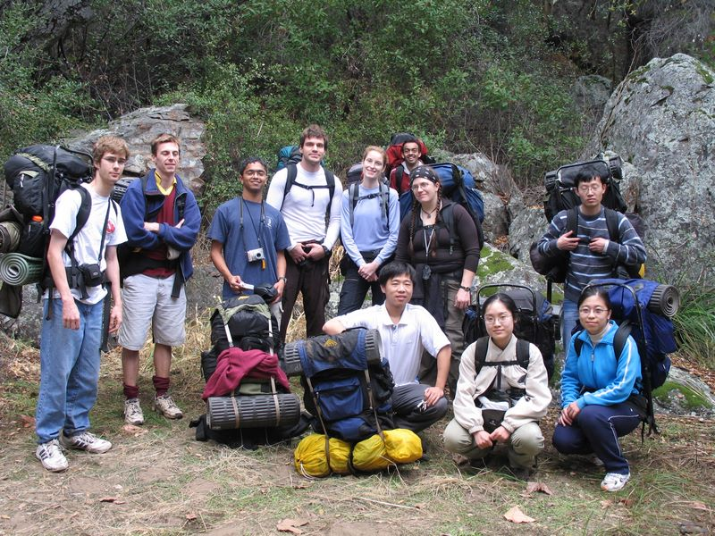

Caltech Memories -- This was the last Caltech-Y hike of the season. It was a backpacking trip to Cleveland National Forest during the Thanksgiving weekend. Uday (taking the picture) and I attempted to make tea. We burnt the milk! Amazingly, not one cared :) (November 2005)
First |
Previous Picture |
Next Picture |
Last | Thumbnails
